Simulation recettes activité SMR
Fonctionnalités du simulateur de recettes d’activité SMR HC par séjour et journée de présence de PMSISoft
Introduction
Depuis le 1er janvier 2024, les établissements SMR voient leur activité classée via le modèle cible de la réforme de financement du SMR.
Afin d’aider ces établissements à comprendre et simuler leurs recettes d’activité, nous avons développé un simulateur de comparaison de recettes d’activité par séjour et journée de présence en hospitalisation complète.
Pour un groupe nosologique et une plage de journées de présence donnés, l’utilisateur choisit la position qu’il souhaite comparer (groupe de réadaptation, groupe de lourdeur ou sévérité) et filtre les 2 autres positions : le simulateur calcule alors, sur la base des règles de classification GME-GMT 2024 et des tarifs ex-DGF ou ex-OQN, les recettes d’activité cumulée du séjour et les recettes d’activité par journée de présence pour chacun des GMT sélectionnés.
Les résultats sont présentés sous 3 formats : graphiques, tableau, exports (csv, json, png).
La manipulation et l’exploitation des résultats du simulateur supposent la connaissance des principales règles de classification des séjours en PMSI SMR.
Fonctionnalités
- Classification en GME et GMT, à partir d’une grille minimale optimisée de saisie d’un séjour virtuel, selon la classification 2024 1
- Calcul des recettes d’activité cumulées du séjour pour chaque GMT sélectionné
- Calcul des recettes d’activité par journée de présence pour chaque GMT sélectionné
- Tarifs ex-DGF ou ex-OQN selon l’établissement
- Choix de la plage de journées de présence entre 0 JP et 300 JP
- Graphique des recettes d’activité cumulée pour chaque GMT sélectionné
- Graphique des recettes d’activité par journée de présence pour chaque GMT sélectionné
- Tableau des recettes d’activité par journée pour chaque GMT sélectionné
- Dans le tableau des recettes d’activité, identification via un code couleur des différentes zones forfaitaires et des journées post 90 JP
- Dans le tableau, typage des plages de JP (bb_inf, tzf1, tzf2, tzf3, bh_supp_tzf31, bh_supp_tzf3, post_90_jp)
- Assistance à la saisie en GN, GR, et GL
- Export png des graphiques
- Export csv du tableau des recettes d’activité par journée
- Export JSON du tableau des recettes d’activité par journée
- Gestion des erreurs de saisie
- Hébergement en Hébergement de Santé Certifié (HDS) au MIPIH
Simulateur de recettes d’activités HC
Créer une simulation2
Au départ
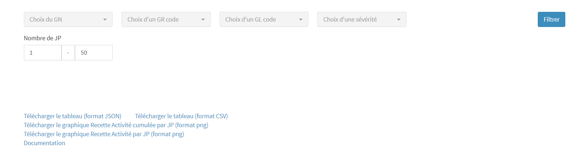
A l’ouverture de l’écran, aucun GN n’est sélectionné.
La première étape va donc consister à sélectionner le GN sur lequel on souhaite travailler.
Choix du GN
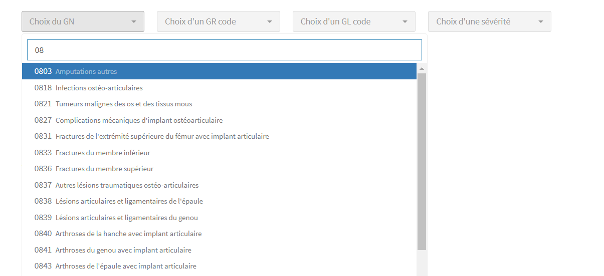
Dans le filtre GN, on sélectionne un GN soit directement, soit via l’assistant en saisissant directement le code GN.
Filtres GR, GL et sévérité
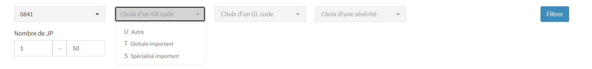
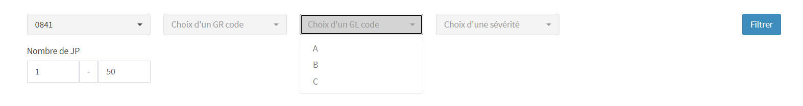 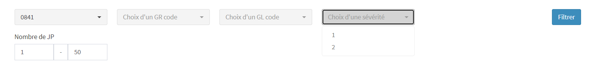
Une fois le filtre GN sélectionné (ici 0841), on sélectionne 2 parmi les 3 filtres GR code (groupe de réadaptation), GL code (groupe de lourdeur) ou sévérité.
Filtrage (GR, GL, sévérité)
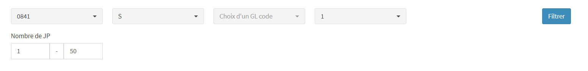
Une fois, le GN sélectionné, parmi les 3 filtres GR code, Gl code et sévérité, on laisse vierge le filtre sur lequel on souhaite comparer les GME-GMT et on sélectionne la valeur voulue pour chacun des 2 autres filtres.
Ici, par exemple, après avoir sélectionné le GN 0841, on souhaite comparer les recettes d’activité des différents GME 0841Sx1 (donc 0841SA1, 0841SB1 et 0841SC1). On a donc sélectionné le GR code à S et la sévérité à 1 et on a laissé vierge le GL code.
On n’a pas modifié la plage de journées de présence de 1 JP à 50 JP, mais on aurait pu la modifier.
On clique sur le bouton “Filtrer” pour lancer les calculs.
Résultats de simulation
Simulation sur le GL code : 0841Sx1
Il s’agit de la simulation paramétrée ci-dessus.
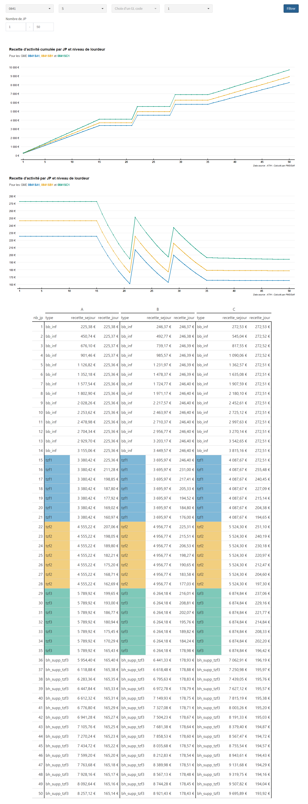
Le tableau de la simulation 0841Sx1 avec une plage de 86 à 100 JP
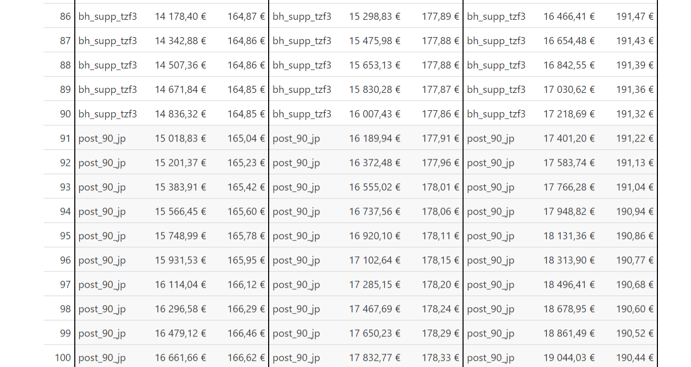
Simulation sur le GR code : 0127xC1
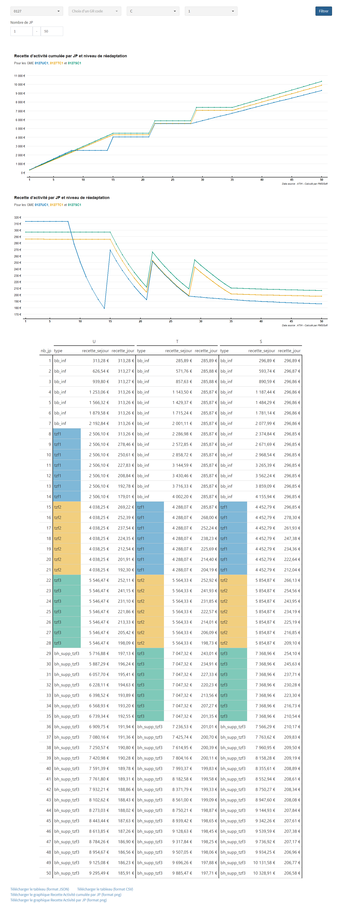
Simulation sur la sévérité : 10UAx
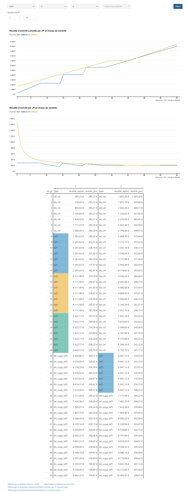
Exports
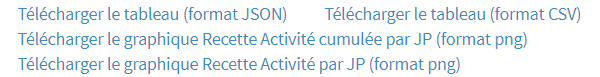
En dessous du tableau, 3 lignes de liens permettent d’exporter les résulats :
# le tableau au format JSON ou csv
# le graphique des recettes d’activité cumulées au format png
# le graphique des recettes d’activité par JP au format png
Pour aller plus loin
A chaque GME est associé son GMT et éventuellement le GMT hebdomadaire associé au GMT.
Pour le cas particulier du GN 2303 de SP, on force le GMT correspondant au GME hors lit ou unité SP
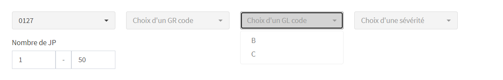
Le choix initial d’un groupe nosologique met à jour automatiquement les valeurs éligibles en GR code, GL code et sévérité.
Ici, par exemple, le choix du GN 0127 n’autorise que le choix d’un GL code à B ou C.
La palette de couleur est un extrait de 3 couleurs de la très classique et optimisée palette Okabe & Ito
Le bleu est pour la valeur la plus basse de la comparaison (exemple : sévérité 1, groupe de lourdeur A), l’orange est pour la valeur intermédiaire ou la plus haute s’il n’y a que 2 alternatives et le vert est pour la valeur la plus haute s’il y a 3 alternatives.
Accès
L’écran est accessible dans PMSISoft Standard SMR, gratuit, illimité dans le temps, ouvert à tout établissement SMR.
Chemin PMSISoft : Référentiels SMR > GME HC Comparaison
Pour demander un accès, nous contacter (en sélectionnant l’objet “Demande accès PMSISoft Standard” et en précisant à minima “Simulateur SMR” dans le message)